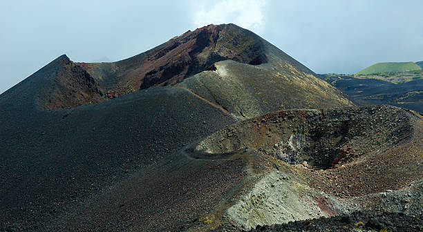
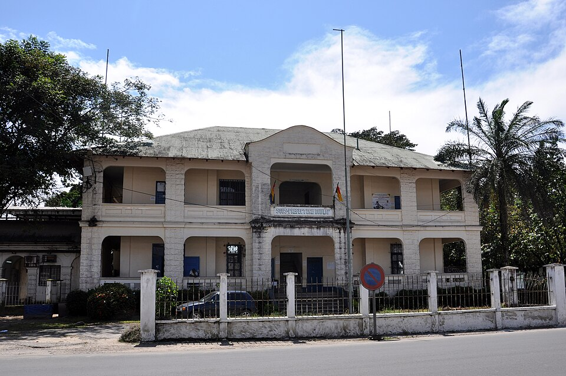
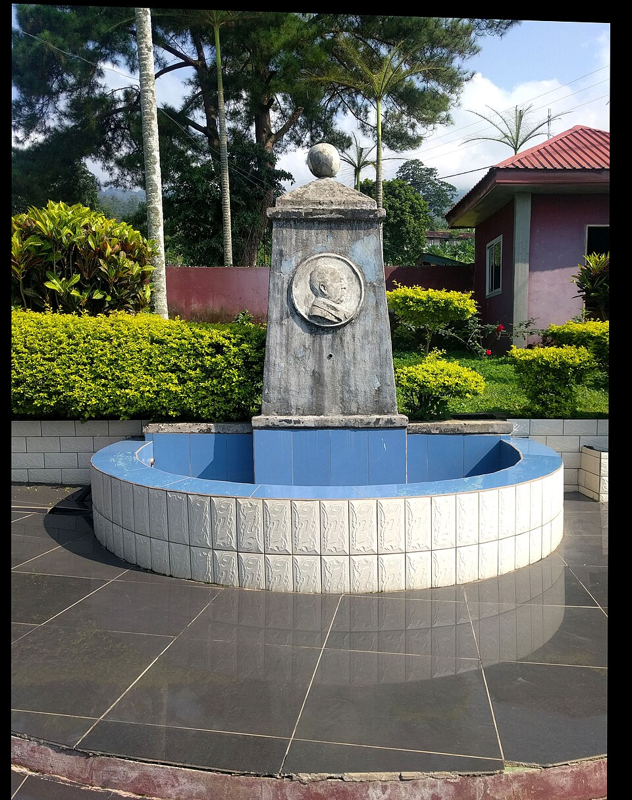
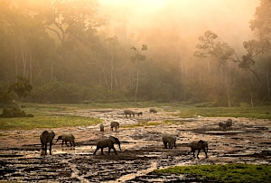
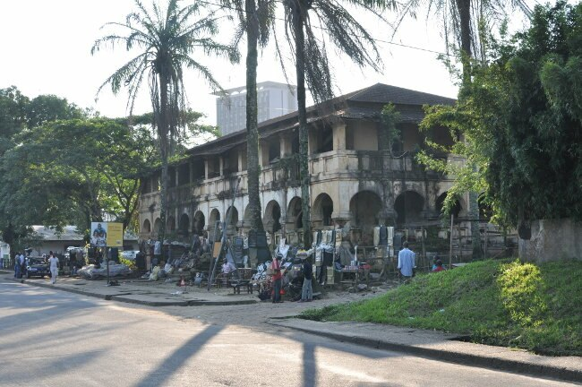

Der Mount Cameroon – ein aktiver Vulkan in Westafrika.
1. Historischer Kontext und deutsche Kolonialzeit (1884-1916)
- 1884 wurde Kamerun offizielle deutsche Kolonie. Vertreter des Deutschen Reiches schlossen sogenannte Schutzverträge mit lokalen Herrschern.
- Diese Verträge führten jedoch nicht zu Gleichberechtigung, sondern zur politischen und wirtschaftlichen Kontrolle durch Deutschland.
- Deutschland nutzte Kamerun vor allem wirtschaftlich. Es entstanden große Plantagen für Kakao, Kautschuk, Palmöl und Bananen.
- Viele Einheimische wurden zur Arbeit gezwungen. Widerstand gegen die Kolonialmacht wurde gewaltsam unterdrückt.
- Die deutsche Kolonialzeit dauerte bis 1916. Während des Ersten Weltkriegs verlor Deutschland das Gebiet an Frankreich und Großbritannien.
- Heute wird diese Zeit kritisch bewertet, da sie für die Bevölkerung Ausbeutung und Ungerechtigkeit bedeutete.

Ehemalige Verwaltungsgebäude in Douala aus der deutschen Zeit.
2. Spuren des deutschen Kolonialismus heute
- In Douala sind noch Gebäude aus der deutschen Zeit erhalten, darunter ehemalige Verwaltungsgebäude und alte Friedhöfe.
- Auch der Bismarck-Brunnen erinnert an die deutsche Kolonialherrschaft.

Der historische Bismarck-Brunnen.
- Einige frühere Plantagenstrukturen bestehen bis heute weiter. Die Architektur mancher Gebäude zeigt noch europäische Einflüsse.
- Diese Orte sind wichtige Erinnerungsorte und regen zur Auseinandersetzung mit der Vergangenheit an.

Elefanten im Waza-Nationalpark – „Afrika im Kleinen“.
3. Einheimische Sehenswürdigkeiten
- Kamerun wird oft als 'Afrika im Kleinen' bezeichnet, da es sehr unterschiedliche Landschaften besitzt.
- Der Mount Cameroon ist ein aktiver Vulkan und einer der höchsten Berge Westafrikas. Im Waza-Nationalpark leben Elefanten und Löwen.
- An der Küste bei Kribi gibt es tropische Strände mit Wasserfällen direkt am Meer.

4. Kritische und gegenwärtige Perspektive
- Aus heutiger Sicht wird der Kolonialismus klar kritisiert. Deutschland profitierte wirtschaftlich stark von den Rohstoffen.
- Für viele Menschen in Kamerun bedeutete diese Zeit jedoch Verlust von Freiheit, kulturelle Unterdrückung und Gewalt.
- Die Aufarbeitung der Kolonialzeit ist bis heute ein wichtiges Thema zwischen afrikanischen Staaten und europäischen Ländern.
- Geschichte sollte auch aus der Perspektive der betroffenen Bevölkerung erzählt werden.